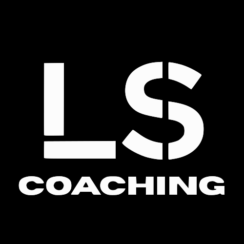

★★★★★
“Finalmente ho una scheda chiara: so cosa fare, come progredire e quando correggere la tecnica.”
Scheda chiaraIl tuo prossimo personal trainer è online. Inizia con un incontro gratuito: capiamo obiettivi, livello, attrezzatura e tempo a disposizione, poi decidi se continuare.

Cosa pensano i clienti
“Finalmente ho una scheda chiara: so cosa fare, come progredire e quando correggere la tecnica.”
Scheda chiara“I check mi aiutano a capire carichi, ripetizioni, recuperi e tecnica senza improvvisare.”
Progressioni vere“Il programma resta sostenibile anche quando ho poco tempo, perché viene adattato alla mia settimana.”
Supporto praticoTecnica, costanza e progressione: la differenza è nel percorso.
Come funziona il percorso?
Prima capiamo come ti alleni, poi costruiamo una scheda sostenibile, poi la aggiorniamo in base ai tuoi feedback.
Parlerai direttamente con me. Serve a capire obiettivi, routine, esperienza, eventuali limiti, attrezzatura e tempo reale per allenarti.
Costruiamo la direzione del lavoro: frequenza, esercizi principali, varianti, volume e priorità tecniche su cui concentrarci.
Raccogliamo informazioni su sedute, carichi, esercizi che sai eseguire, recupero, preferenze e organizzazione della settimana.
Costruiamo insieme il programma: tu mi dici cosa è sostenibile nella tua vita, io lo rendo efficace, tecnico e progressivo.
Hai un riferimento per dubbi su esercizi, recuperi, carichi, doloretti, video esecuzioni e organizzazione delle sedute.
Valutiamo carichi, ripetizioni, tecnica, sensazioni, recupero e costanza per aggiornare il programma nel modo più efficace.
Ti insegno ad allenarti con criterio: l’obiettivo è farti uscire dal percorso sapendo gestire tecnica, progressioni e routine.
Ma chi sarà il tuo personal trainer online?
Una guida diretta per costruire allenamento, tecnica, progressioni e adattamenti sulla tua vita reale. Il Base nasce per smettere di usare schede copia-incolla.
 Personal trainer online
Personal trainer onlineIl tuo referente
Personal trainer online con 2 lauree, certificazioni professionali e circa 10 anni di esperienza: coordino programma di allenamento, tecnica, progressioni, check e modifiche dentro un unico metodo.
Non lavoro consegnando una scheda generica e sparendo. Prima analizzo la persona: condizione iniziale, esperienza, obiettivi, routine, attrezzatura, disponibilità reale e ostacoli che potrebbero rendere difficile essere costante.
Il mio metodo traduce i dati in scelte pratiche: esercizi, volumi, recuperi e progressioni vengono costruiti su di te e aggiornati in base a feedback, video, carichi e risultati, così il programma evolve invece di restare fermo.
Sì, ma il metodo cosa fa?
Ogni scelta viene valutata con criterio: esercizi, serie, ripetizioni, recuperi e carichi vengono aggiornati quando cambiano i tuoi dati o la tua routine.
Prenota un incontro gratuito Analisi continuaAllenamento, tecnica e progressioni nello stesso quadro.
Analisi continuaAllenamento, tecnica e progressioni nello stesso quadro.Lasciarti con una scheda senza risposte non ha senso. Per questo puoi scrivermi quando ti serve: basta un messaggio su WhatsApp.
Creo la combinazione giusta di metodo, semplicità e tecnologia per ridurre ogni ostacolo lungo il tuo percorso, mettendoti al centro e aiutandoti a raggiungere i tuoi obiettivi.
Tecnica guidata
Ogni esercizio della tua scheda avrà un video dettagliato che ti spiega come eseguirlo nel modo corretto. Ma non basta.
Mi invierai i video delle esecuzioni dei tuoi esercizi: li analizzerò per darti feedback precisi, pratici e subito applicabili.
Passo dopo passo rivediamo insieme la tecnica, finché il movimento diventa più sicuro, pulito e adatto al tuo livello.
Prenota un incontro gratuitoApp per l’allenamento
Nel Coaching Base hai accesso all’app dedicata: allenamenti ordinati, esercizi spiegati, video dimostrativi e progressi sempre sotto controllo.


Sì, ma quanto costa?
Base
Allenamento online
Per chi vuole iniziare con una guida tecnica.
Premium
Percorso completo
Per coordinare dieta, training e controlli.


Parla con me: capiamo se il Base è sufficiente o se ha senso integrare anche la nutrizione con il Premium.
Prenota un incontro gratuitoScopri anche
Ce lo chiedono spesso
Partiamo da una consulenza gratuita, raccogliamo livello, obiettivi, attrezzatura, disponibilità e video utili, poi costruisco una scheda con check ogni due settimane.
Sì. Gli aggiornamenti fanno parte del percorso: il programma cambia quando cambiano tecnica, carichi, recupero, performance o routine.
Lo capiamo in consulenza. Se ti basta allenarti meglio partiamo dal Base; se alimentazione e allenamento devono essere coordinati, allora ha senso il Premium.